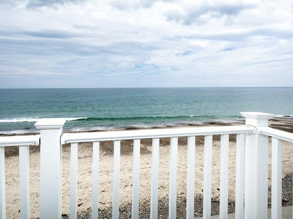

Rexhame is located south of Humarock beach. In order to get to Rexhame you have to either walk through the dunes from Humarock or drive 20 minutes on the road because there is no direct route to get to Rexhame beach from Humarock. Rexhame is a very nice part of Marshfield that is filled with little neighborhoods and side streets. My dad has built many big houses in Rexhame and Rexhame is continuing to grow. This is the perfect place for a nice smooth bike ride or a walk with the dogs!
